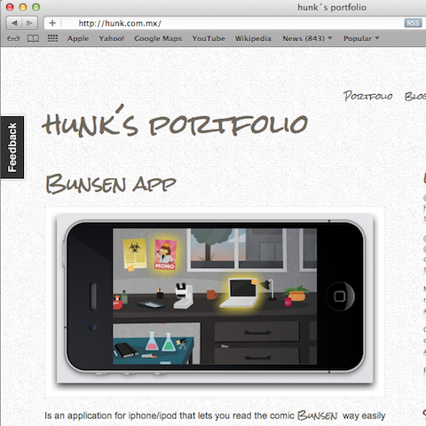
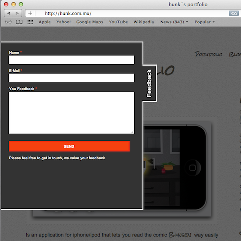
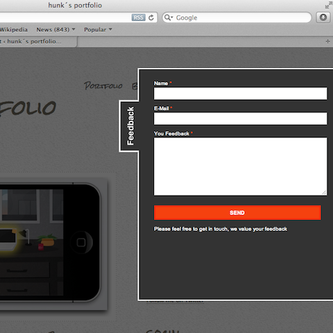
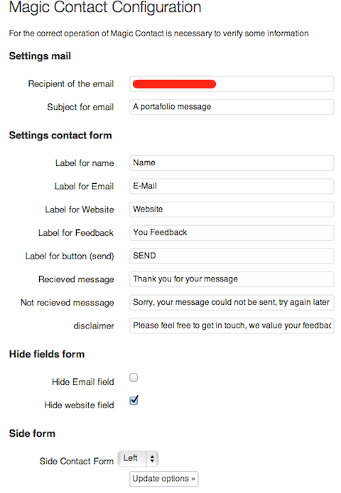

Magic Contact is a Simple and Elegant contact form for Wordpress
Magic Contact is a Simple and beatiful contact form for WordPress, taking as it bases to Contactable. (jQuery Plugin) By Philip Beel.
With this plugin you will be able to add quickly a simple and beautiful contact form for Wordpress Sites.
After seeing Contactable functioning (jquery plugin) of Philip Beel i decided write a plugin for wordpress, for adding a rapid and simple way the contact form.
and this is the result.




If my code saves you some time and trouble, and consider make a small donation for support my future developments, it will be very much appreciated.
Having trouble with Magic Contact? Check out the documentation at https://github.com/hunk/Magic-Contact/wiki or report the bugs here https://github.com/hunk/Magic-Contact/issues.